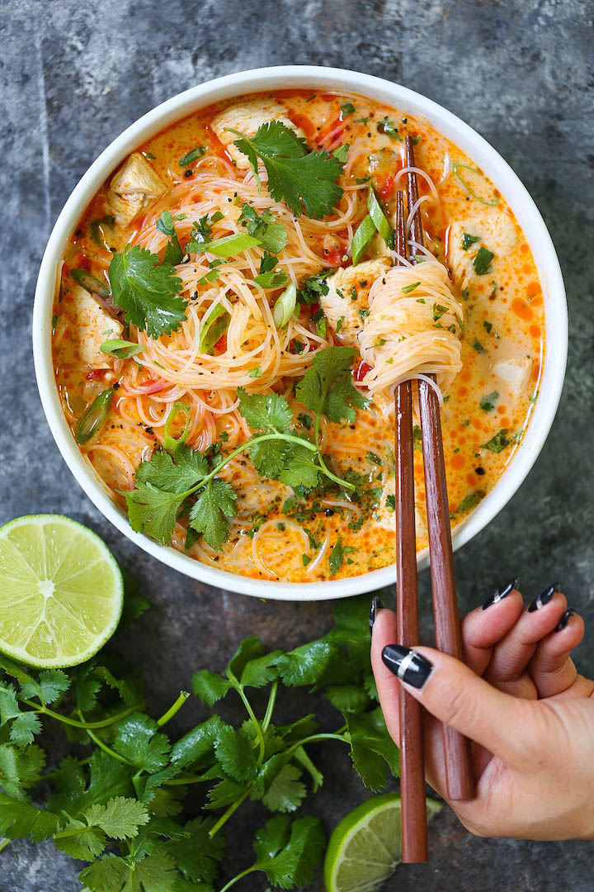

Thai Red Curry Noodle Soup

A Delicious Comfort Dish Great For The Colder Seasons
Yes, you can have Thai takeout right at home! This soup is packed with so much flavor with bites of tender chicken, rice noodles, cilantro, basil and lime juice! So cozy, comforting and fragrant – plus, it’s easy enough for any night of the week!
Ingredients
- 1 tbsp olive oil
- 1 1/2 lbs boneless, skinless chicken breast, cut into 1-inch chunks
- Kosher salt and freshly ground black pepper, to taste
- 3 garlic cloves, minced
- 1 red bell pepper, diced
- 1 onion, diced
- 3 tbsp red curry paste
- 1 tbsp freshly grated ginger
- 6 cups low sodium chicken broth
- 1 (13.5-ounce) can coconut milk
- 1/2 (8-ounce) package rice noodles
- 1 tbsp fish sauce
- 2 tsp brown sugar
- 3 green onions, thinly sliced
- 1/2 cup chopped fresh cilantro leaves
- 1/4 cup chopped fresh basil leaves
- 2 tbsp freshly squeezed lime juice
Steps
- Heat olive oil in a large stockpot or Dutch oven over medium heat. Season chicken with salt and pepper, to taste. Add chicken to the stockpot and cook until golden, about 2-3 minutes; set aside.
- Add garlic, bell pepper and onion. Cook, stirring occasionally, until tender, about 3-4 minutes.
- Stir in red curry paste and ginger until fragrant, about 1 minute.
- Stir in chicken broth and coconut milk, scraping any browned bits from the bottom of the pot.
- Stir in chicken. Bring to a boil; reduce heat and cook, stirring occasionally, until reduced, about 10 minutes.
- Stir in rice noodles, fish sauce and brown sugar until noodles are tender, about 5 minutes.
- Remove from heat; stir in green onions, cilantro, basil and lime juice; season with salt and pepper, to taste.
- Serve immediately.